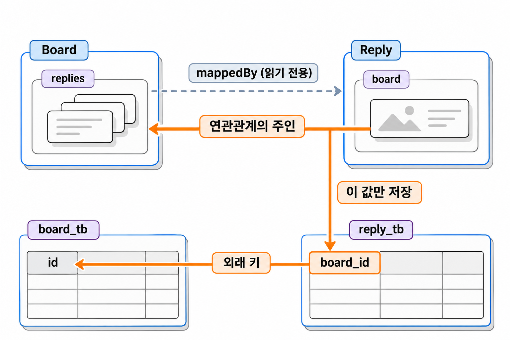
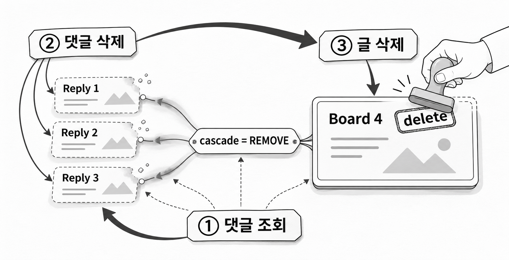

16장. 양방향 연관관계란?
1. 댓글 엔티티
1.1 Reply와 두 개의 @ManyToOne
블로그 글에 댓글을 달려면 댓글 하나마다 두 가지 정보가 필요합니다. 어느 글에 달린 댓글인지, 누가 쓴 댓글인지입니다. 그래서 댓글 엔티티 Reply는 게시글 Board와 회원 User를 함께 참조합니다.
글 하나에는 댓글이 여러 개 달립니다. 회원 한 명도 댓글을 여러 개 씁니다. 댓글 쪽에서 보면 글과의 관계도 다대일이고, 회원과의 관계도 다대일입니다. 5장에서 Board에 작성자를 연결할 때 @ManyToOne을 한 번 썼는데, Reply에는 이 애너테이션이 두 번 들어갑니다.
예제 16-1 — 댓글 엔티티 만들기
이어서: 예제 15-5
파일명: src/main/java/com/newtenco/blog/reply/Reply.java
package com.newtenco.blog.reply;
import com.newtenco.blog.board.Board;
import com.newtenco.blog.user.User;
import jakarta.persistence.Column;
import jakarta.persistence.Entity;
import jakarta.persistence.FetchType;
import jakarta.persistence.GeneratedValue;
import jakarta.persistence.GenerationType;
import jakarta.persistence.Id;
import jakarta.persistence.ManyToOne;
import jakarta.persistence.Table;
import lombok.Builder;
import lombok.Getter;
import lombok.NoArgsConstructor;
import org.hibernate.annotations.CreationTimestamp;
import java.sql.Timestamp;
@NoArgsConstructor
@Getter
@Entity
@Table(name = "reply_tb")
public class Reply {
@Id
@GeneratedValue(strategy = GenerationType.IDENTITY)
private Integer id;
@Column(length = 100, nullable = false)
private String comment;
@ManyToOne(fetch = FetchType.LAZY)
private User user;
@ManyToOne(fetch = FetchType.LAZY)
private Board board;
@CreationTimestamp
private Timestamp createdAt;
@Builder
public Reply(Integer id, String comment, User user, Board board, Timestamp createdAt) {
this.id = id;
this.comment = comment;
this.user = user;
this.board = board;
this.createdAt = createdAt;
}
}실행 결과
서버를 다시 실행하면 콘솔의 Hibernate 로그에 reply_tb를 만드는 DDL이 찍힙니다. 아래는 그 일부입니다. 열 순서와 외래 키 제약 이름(FK...)은 환경마다 다를 수 있습니다.
create table reply_tb (
board_id integer,
id integer generated by default as identity,
user_id integer,
created_at timestamp(6) not null,
comment varchar(100) not null,
primary key (id)
)
alter table if exists reply_tb
add constraint FK... foreign key (board_id) references board_tb
alter table if exists reply_tb
add constraint FK... foreign key (user_id) references user_tb자바 필드 이름은 board, user인데 테이블에는 board_id, user_id 열이 생겼습니다. @ManyToOne 필드에 열 이름을 따로 지정하지 않았기 때문입니다. 이때 JPA는 "필드 이름 + _ + 참조하는 엔티티의 ID 열 이름"으로 외래 키 열을 만듭니다. 외래 키 제약도 두 개가 걸려서, board_id와 user_id에는 실제로 있는 글 번호와 회원 번호만 들어갈 수 있습니다.
두 관계는 5장의 Board.user처럼 지연 로딩(LAZY)으로 두었습니다. 댓글을 다룰 때마다 글과 작성자가 필요한 것은 아닙니다. 그래서 필요한 쿼리에서만 join fetch로 함께 가져옵니다.
1.2 댓글 샘플 데이터
Postman으로 댓글 기능을 확인하려면 DB에 댓글이 미리 몇 개 들어 있어야 합니다. 5장에서 만든 data.sql 끝에 댓글 insert 문을 붙입니다. 댓글 행은 board_id와 user_id로 글과 회원을 가리킵니다. 가리킬 글과 회원이 먼저 있어야 외래 키 제약을 통과하므로, 댓글 insert 문은 반드시 글과 회원 insert 문 뒤에 둡니다.
예제 16-2 — 댓글 샘플 데이터 넣기
이어서: 예제 16-1
파일명: src/main/resources/db/data.sql
insert into user_tb (username, password, email, created_at) values ('ssar', '$2a$10$eiDus5jn3LsNyfjng4/HxukQh.7EZmn1ZNL1g4s3kkqPYpwY5DiuO', 'ssar@metacoding.com', now());
insert into user_tb (username, password, email, created_at) values ('cos', '$2a$10$eiDus5jn3LsNyfjng4/HxukQh.7EZmn1ZNL1g4s3kkqPYpwY5DiuO', 'cos@metacoding.com', now());
insert into board_tb (title, content, user_id, created_at) values ('제목1', '내용1', 1, now());
insert into board_tb (title, content, user_id, created_at) values ('제목2', '내용2', 1, now());
insert into board_tb (title, content, user_id, created_at) values ('제목3', '내용3', 1, now());
insert into board_tb (title, content, user_id, created_at) values ('제목4', '내용4', 2, now());
insert into board_tb (title, content, user_id, created_at) values ('제목5', '내용5', 2, now());
insert into reply_tb (comment, board_id, user_id, created_at) values ('댓글1', 4, 2, now());
insert into reply_tb (comment, board_id, user_id, created_at) values ('댓글2', 4, 2, now());
insert into reply_tb (comment, board_id, user_id, created_at) values ('댓글3', 4, 2, now());
insert into reply_tb (comment, board_id, user_id, created_at) values ('댓글4', 5, 1, now());
insert into reply_tb (comment, board_id, user_id, created_at) values ('댓글5', 5, 1, now());실행 결과
서버를 다시 실행하고 H2 콘솔(/h2-console)에서 select * from reply_tb;를 실행합니다. CREATED_AT 열은 실행한 시각이라 아래에서 뺐습니다.
ID BOARD_ID USER_ID COMMENT
1 4 2 댓글1
2 4 2 댓글2
3 4 2 댓글3
4 5 1 댓글4
5 5 1 댓글5cos가 쓴 4번 글에는 cos의 댓글 세 개가 달려 있습니다. 역시 cos가 쓴 5번 글에는 ssar의 댓글 두 개가 달려 있습니다. 1~3번 글에는 댓글이 하나도 없습니다. 댓글이 있는 글과 없는 글이 섞여 있다는 점을 기억해 두면 3절의 글 상세 조회와 5절의 글 삭제를 이해하기 쉽습니다.
2. 양방향 매핑
2.1 @OneToMany와 mappedBy
지금은 댓글에서 글로만 갈 수 있습니다(reply.getBoard()). 글 상세 화면에는 반대 방향이 필요합니다. 글에서 출발해 그 글에 달린 댓글 목록을 보여 줘야 합니다. Board에 댓글 목록 필드를 더하면 글도 댓글을 참조하게 됩니다.
이렇게 두 엔티티가 서로를 참조하도록 매핑한 관계를 양방향 연관관계(bidirectional association)라고 합니다. 지금까지처럼 한쪽만 상대를 참조하는 관계는 단방향 연관관계(unidirectional association)입니다. 글 하나에 댓글이 여러 개이므로 글 쪽에서 보면 일대다 관계이고, 이때 @OneToMany를 씁니다.
기본 문법
@OneToMany(mappedBy = "상대엔티티의필드이름")
private List<상대엔티티> 필드이름 = new ArrayList<>();mappedBy에는 상대 엔티티에서 이쪽을 가리키는 필드의 이름을 적습니다. Reply에서 글을 가리키는 필드가 board이므로 mappedBy = "board"가 됩니다. 여기에 적는 값은 테이블 이름도 열 이름(board_id)도 아닌 자바 필드 이름입니다. 이 부분에서 틀리기 쉽습니다. 이름을 잘못 적으면 서버가 시작할 때 매핑 오류로 멈춥니다.
예제 16-3 — 게시글에 댓글 목록 연결하기
이어서: 예제 16-2
파일명: src/main/java/com/newtenco/blog/board/Board.java
package com.newtenco.blog.board;
import com.newtenco.blog.reply.Reply;
import com.newtenco.blog.user.User;
import jakarta.persistence.Column;
import jakarta.persistence.Entity;
import jakarta.persistence.FetchType;
import jakarta.persistence.GeneratedValue;
import jakarta.persistence.GenerationType;
import jakarta.persistence.Id;
import jakarta.persistence.ManyToOne;
import jakarta.persistence.OneToMany;
import jakarta.persistence.Table;
import lombok.Builder;
import lombok.Getter;
import lombok.NoArgsConstructor;
import org.hibernate.annotations.CreationTimestamp;
import java.sql.Timestamp;
import java.util.ArrayList;
import java.util.List;
@NoArgsConstructor
@Getter
@Entity
@Table(name = "board_tb")
public class Board {
@Id
@GeneratedValue(strategy = GenerationType.IDENTITY)
private Integer id;
@Column(length = 100, nullable = false)
private String title;
@Column(length = 1000, nullable = false)
private String content;
@ManyToOne(fetch = FetchType.LAZY)
private User user;
@OneToMany(mappedBy = "board")
private List<Reply> replies = new ArrayList<>();
@CreationTimestamp
private Timestamp createdAt;
@Builder
public Board(Integer id, String title, String content, User user, Timestamp createdAt) {
this.id = id;
this.title = title;
this.content = content;
this.user = user;
this.createdAt = createdAt;
}
public void update(String title, String content) {
this.title = title;
this.content = content;
}
}실행 결과
서버를 다시 실행하고 로그에서 create table board_tb 부분을 찾습니다. 열은 전과 같이 id, user_id, created_at, title, content뿐이고, replies에 해당하는 열은 없습니다.
필드를 더했는데 테이블은 그대로라는 점이 양방향 매핑을 이해하는 열쇠입니다. 글과 댓글의 관계는 이미 reply_tb.board_id 외래 키 하나에 저장되어 있습니다. replies는 같은 외래 키를 글 쪽에서 거꾸로 읽는 통로라서 새 열이 필요하지 않습니다. @OneToMany는 기본 로딩 전략이 지연 로딩이므로 fetch를 따로 적지 않았습니다.
replies는 선언할 때 new ArrayList<>()로 초기화했습니다. 그래서 댓글이 없는 글에서도 목록이 null이 아니라 빈 리스트가 되고, getReplies()를 부른 코드가 NullPointerException을 만나지 않습니다. @Builder가 붙은 생성자는 replies를 건드리지 않으므로 빌더로 만든 글도 빈 리스트로 시작합니다.
2.2 연관관계의 주인
양방향 매핑을 하면 객체 쪽 참조는 reply.board와 board.replies 두 개가 됩니다. 테이블의 외래 키는 여전히 reply_tb.board_id 하나입니다. 두 참조가 가리키는 값이 서로 다를 때 JPA는 어느 쪽을 믿고 board_id를 저장할지 정해야 합니다. 그래서 둘 중 한쪽을 연관관계의 주인(owner)으로 정합니다. JPA는 주인 쪽 필드의 값만 외래 키에 반영합니다.
주인은 외래 키 열이 있는 테이블에 매핑된 엔티티의 필드입니다. 여기서는 다(多) 쪽인 Reply.board가 주인입니다. mappedBy는 "나는 주인이 아니다"라는 표시입니다. mappedBy = "board"를 풀어 쓰면 "이 관계는 Reply.board가 관리하고, 나는 읽기만 한다"는 뜻입니다.

그림 16-1처럼 주인이 아닌 board.replies에 댓글을 넣어도 board_id는 바뀌지 않습니다. 다음 코드는 겉보기에는 댓글을 글에 붙이는 것 같지만 실제로는 연결하지 못합니다.
코드 조각
Reply reply = Reply.builder().comment("댓글").user(user).build();
board.getReplies().add(reply); // 주인이 아니므로 board_id에 반영되지 않음
replyRepository.save(reply); // board_id가 null로 저장됨댓글을 글에 연결하려면 주인인 reply.board에 글을 넣어야 합니다. 4절의 댓글 쓰기는 Reply.builder().board(board)로 주인 쪽을 채웁니다. 이 책에서 replies는 글 상세 조회에서 댓글을 읽을 때만 씁니다.
3. 댓글이 달린 글 상세 조회
3.1 left join fetch로 한 번에 조회
7장에서 만든 findByIdJoinUser()는 글과 작성자만 join fetch로 가져옵니다. 글 상세 응답에 댓글까지 담으려면 무엇을 더 가져와야 하는지 먼저 따져 봅니다. 응답에 들어갈 것은 글, 글 작성자, 댓글 목록, 그리고 댓글마다의 작성자 이름입니다.
Board.replies와 Reply.user는 둘 다 지연 로딩입니다. join fetch 없이 Service에서 이 값들을 꺼내면 댓글 목록을 읽을 때 쿼리가 한 번 나갑니다. 이어서 서로 다른 댓글 작성자마다 쿼리가 또 나갑니다. 6장에서 본 N+1 문제입니다. 그래서 글, 글 작성자, 댓글, 댓글 작성자 네 가지를 쿼리 하나로 가져옵니다.
이때 댓글 쪽에 join fetch를 그대로 쓰면 안 됩니다. JPQL의 join은 내부 조인(inner join)이라 양쪽에 짝이 있는 행만 남깁니다. 댓글이 없는 1번 글은 reply_tb에 짝이 없으니 조회 결과에서 사라집니다. 글이 분명히 있는데도 "게시글을 찾을 수 없습니다"라는 응답이 옵니다.
짝이 없어도 왼쪽 테이블(글)의 행을 남기려면 외부 조인인 left join을 씁니다. 댓글이 없으면 댓글 쪽 열이 null로 채워지고, JPA는 이 결과를 빈 replies 목록으로 만듭니다.
| 조인 | 댓글 있는 글(4번) | 댓글 없는 글(1번) |
|---|---|---|
join fetch b.replies | 글 + 댓글 3개 | 조회 결과 없음 → 404 |
left join fetch b.replies | 글 + 댓글 3개 | 글 + 빈 댓글 목록 |
글 작성자(b.user)는 모든 글에 반드시 있으므로 join fetch를 그대로 씁니다. 댓글 작성자(r.user)는 댓글이 없으면 조인할 대상도 없으므로 left join fetch로 씁니다.
예제 16-4 — 글과 댓글을 한 번에 조회하기
이어서: 예제 16-3
파일명: src/main/java/com/newtenco/blog/board/BoardRepository.java
package com.newtenco.blog.board;
import org.springframework.data.domain.Page;
import org.springframework.data.domain.Pageable;
import org.springframework.data.jpa.repository.JpaRepository;
import org.springframework.data.jpa.repository.Query;
import org.springframework.data.repository.query.Param;
import java.util.Optional;
public interface BoardRepository extends JpaRepository<Board, Integer> {
@Query(value = "select b from Board b join fetch b.user where b.title like concat('%', :keyword, '%')",
countQuery = "select count(b) from Board b where b.title like concat('%', :keyword, '%')")
Page<Board> findAllJoinUser(@Param("keyword") String keyword, Pageable pageable);
@Query("""
select b from Board b
join fetch b.user
left join fetch b.replies r
left join fetch r.user
where b.id = :id
order by r.id
""")
Optional<Board> findByIdJoinUserAndReplies(@Param("id") Integer id);
}파일명: src/main/java/com/newtenco/blog/board/BoardService.java
package com.newtenco.blog.board;
import com.newtenco.blog.core.handler.errors.ForbiddenException;
import com.newtenco.blog.core.handler.errors.NotFoundException;
import com.newtenco.blog.user.User;
import lombok.RequiredArgsConstructor;
import org.springframework.data.domain.PageRequest;
import org.springframework.data.domain.Pageable;
import org.springframework.data.domain.Sort;
import org.springframework.stereotype.Service;
import org.springframework.transaction.annotation.Transactional;
@RequiredArgsConstructor
@Transactional(readOnly = true)
@Service
public class BoardService {
private final BoardRepository boardRepository;
public BoardResponse.PageDTO 글목록(Integer page, String keyword) {
Pageable pageable = PageRequest.of(page, 3, Sort.by(Sort.Direction.DESC, "id"));
return new BoardResponse.PageDTO(boardRepository.findAllJoinUser(keyword, pageable));
}
@Transactional
public BoardResponse.ListDTO 글쓰기(BoardRequest.SaveDTO reqDTO, User sessionUser) {
Board savedBoard = boardRepository.save(reqDTO.toEntity(sessionUser));
return new BoardResponse.ListDTO(savedBoard);
}
@Transactional
public BoardResponse.ListDTO 글수정(Integer id, BoardRequest.UpdateDTO reqDTO, Integer sessionUserId) {
Board board = boardRepository.findById(id)
.orElseThrow(() -> new NotFoundException("게시글을 찾을 수 없습니다"));
if (!board.getUser().getId().equals(sessionUserId)) {
throw new ForbiddenException("게시글을 수정할 권한이 없습니다");
}
board.update(reqDTO.title(), reqDTO.content());
return new BoardResponse.ListDTO(board);
}
@Transactional
public void 글삭제(Integer id, Integer sessionUserId) {
Board board = boardRepository.findById(id)
.orElseThrow(() -> new NotFoundException("게시글을 찾을 수 없습니다"));
if (!board.getUser().getId().equals(sessionUserId)) {
throw new ForbiddenException("게시글을 삭제할 권한이 없습니다");
}
boardRepository.delete(board);
}
public BoardResponse.DetailDTO 글상세(Integer id) {
Board board = boardRepository.findByIdJoinUserAndReplies(id)
.orElseThrow(() -> new NotFoundException("게시글을 찾을 수 없습니다"));
return new BoardResponse.DetailDTO(board);
}
}실행 결과
Postman에서 GET http://localhost:8080/api/boards/1을 보내면 응답 본문은 7장과 같습니다. DetailDTO가 아직 댓글을 담지 않기 때문입니다. 달라진 것은 콘솔입니다. 쿼리 하나에서 테이블 네 개가 함께 조인됩니다. 아래는 로그의 일부이고, b1_0 같은 별칭은 환경마다 다를 수 있습니다.
from
board_tb b1_0
join
user_tb u1_0
on u1_0.id=b1_0.user_id
left join
reply_tb r1_0
on b1_0.id=r1_0.board_id
left join
user_tb u2_0
on u2_0.id=r1_0.user_id
where
b1_0.id=?
order by
r1_0.iduser_tb가 두 번 조인된 것은 글 작성자(u1_0)와 댓글 작성자(u2_0)를 따로 붙였기 때문입니다. 댓글이 세 개인 4번 글을 조회하면 DB는 글 정보가 반복된 행 세 개를 돌려줍니다. Hibernate는 같은 글 행을 Board 객체 하나로 합치고 댓글 세 개를 그 글의 replies에 담습니다. 그래서 반환 타입을 Optional<Board>로 두어도 결과가 여러 개라는 오류가 나지 않습니다.
메서드 이름을 findByIdJoinUserAndReplies()로 바꾼 데도 이유가 있습니다. 무엇을 함께 가져오는지가 이름에 드러나야 Service에서 이 메서드를 고를 때 지연 로딩 쿼리가 더 나갈지 바로 판단할 수 있습니다. order by r.id는 댓글을 쓴 순서대로 정렬합니다.
3.2 텍스트 블록으로 JPQL 쓰기
예제 16-4의 두 번째 JPQL은 """로 감싼 텍스트 블록(text block)으로 썼습니다. 텍스트 블록은 Java 15부터 쓸 수 있는 여러 줄 문자열 문법입니다. 줄바꿈이 문자열에 그대로 들어가므로, 조인이 여러 개인 JPQL도 SQL을 읽듯 줄 단위로 읽을 수 있습니다.
같은 쿼리를 한 줄짜리 문자열로 쓰면 다음과 같습니다.
코드 조각
@Query("select b from Board b join fetch b.user left join fetch b.replies r left join fetch r.user where b.id = :id order by r.id")한 줄 문자열은 오른쪽으로 길게 늘어나서 조인이 몇 개인지 한눈에 보이지 않습니다. 그렇다고 문자열을 +로 이어 붙여 줄을 나누면 조각 끝의 공백을 빠뜨리기 쉽습니다. "... join fetch b.user" + "left join ..."처럼 쓰면 두 조각이 b.userleft로 붙어 JPQL 문법 오류가 납니다. 텍스트 블록에서는 줄바꿈이 공백 역할을 하므로 이런 실수가 생기지 않습니다.
텍스트 블록은 여는 """ 바로 뒤에서 줄을 바꿔야 합니다. 같은 줄에 글자를 이어 쓰면 컴파일 오류입니다. 각 줄 앞에 공통으로 붙은 들여쓰기는 컴파일러가 지웁니다. 그래서 코드 들여쓰기에 맞춰 써도 실제 문자열 앞에는 공백이 붙지 않습니다.
3.3 중첩 record DTO
이제 글 상세 응답에 댓글 목록을 담습니다. 댓글 하나를 나타낼 DTO가 필요한데, 이 DTO는 글 상세 응답 안에서만 쓰입니다. 그래서 DetailDTO 안에 ReplyDTO를 중첩 record로 둡니다. 바깥에서는 BoardResponse.DetailDTO.ReplyDTO라고 써야 하므로, 이름만 봐도 어느 응답에 속한 DTO인지 알 수 있습니다.
양방향 매핑을 하면 엔티티를 응답으로 바로 내보내지 말아야 할 이유가 하나 더 생깁니다. Board는 replies를 갖고, 그 안의 Reply는 다시 board를 갖습니다. Jackson이 Board 엔티티를 JSON으로 바꾸면 글 → 댓글 → 글 → 댓글 순으로 끝없이 따라 들어가다 오류로 멈춥니다. DTO에는 필요한 값만 꺼내 담으므로 이런 순환이 생기지 않습니다.
예제 16-5 — 글 상세 응답에 댓글 목록 담기
이어서: 예제 16-4
파일명: src/main/java/com/newtenco/blog/board/BoardResponse.java
package com.newtenco.blog.board;
import com.newtenco.blog.reply.Reply;
import org.springframework.data.domain.Page;
import java.sql.Timestamp;
import java.util.List;
public class BoardResponse {
public record ListDTO(Integer id, String title, String content, String username, Timestamp createdAt) {
public ListDTO(Board board) {
this(board.getId(), board.getTitle(), board.getContent(), board.getUser().getUsername(), board.getCreatedAt());
}
}
public record PageDTO(List<ListDTO> boards, int number, int totalPage, boolean isFirst, boolean isLast) {
public PageDTO(Page<Board> boardPage) {
this(boardPage.getContent().stream().map(ListDTO::new).toList(),
boardPage.getNumber(),
boardPage.getTotalPages(),
boardPage.isFirst(),
boardPage.isLast());
}
}
public record DetailDTO(Integer id, String title, String content, Integer userId, String username,
List<ReplyDTO> replies) {
public DetailDTO(Board board) {
this(board.getId(), board.getTitle(), board.getContent(), board.getUser().getId(), board.getUser().getUsername(),
board.getReplies().stream().map(ReplyDTO::new).toList());
}
public record ReplyDTO(Integer id, String comment, Integer userId, String username) {
public ReplyDTO(Reply reply) {
this(reply.getId(), reply.getComment(), reply.getUser().getId(), reply.getUser().getUsername());
}
}
}
}실행 결과
GET http://localhost:8080/api/boards/4의 응답입니다. 읽기 쉽게 줄을 나눴습니다.
{
"status": 200,
"msg": "성공",
"body": {
"id": 4,
"title": "제목4",
"content": "내용4",
"userId": 2,
"username": "cos",
"replies": [
{ "id": 1, "comment": "댓글1", "userId": 2, "username": "cos" },
{ "id": 2, "comment": "댓글2", "userId": 2, "username": "cos" },
{ "id": 3, "comment": "댓글3", "userId": 2, "username": "cos" }
]
}
}댓글이 없는 1번 글도 404가 아니라 빈 댓글 목록으로 응답합니다. left join이 짝 없는 글 행을 남겨 둔 결과입니다.
{
"status": 200,
"msg": "성공",
"body": {
"id": 1,
"title": "제목1",
"content": "내용1",
"userId": 1,
"username": "ssar",
"replies": []
}
}DetailDTO 생성자는 board.getReplies()와 reply.getUser()를 호출합니다. 그런데도 콘솔에는 쿼리가 더 찍히지 않습니다. 예제 16-4의 쿼리가 이 값들을 이미 모두 채워 두었기 때문입니다. 이 프로젝트는 open-in-view=false라서 DTO 변환을 트랜잭션 안에서 끝내야 합니다. 이 코드에서는 변환이 글상세() 안에서 끝나므로 이 조건을 지킵니다.
ReplyDTO에 userId를 넣은 것은 클라이언트가 댓글마다 작성자를 구별할 수 있게 하려는 것입니다. 작성자 이름은 바뀔 수 있어도 회원 번호는 바뀌지 않으므로, 화면에서 작성자를 비교할 때는 번호가 더 믿을 만합니다.
record는 구성 요소 자리에 다른 값을 다시 넣지 못하게 막을 뿐입니다. 구성 요소로 들어간 목록이 ArrayList라면 그 안에 항목을 더하거나 뺄 수 있습니다. 이 코드는 stream().toList()로 목록을 만듭니다. 이 메서드가 돌려주는 목록은 수정할 수 없어서 add()를 부르면 UnsupportedOperationException이 납니다. 그래서 DetailDTO는 안쪽 댓글 목록까지 바뀌지 않습니다.
4. 댓글 쓰기와 삭제
4.1 @NotNull과 게시글 확인
댓글을 쓰려면 댓글 내용과 어느 글에 다는지를 요청으로 받아야 합니다. 작성자는 요청 본문으로 받지 않고, 14장의 @AuthenticationPrincipal로 토큰에서 꺼냅니다. 본문으로 받으면 다른 사람의 회원 번호를 넣어 그 사람 이름으로 댓글을 쓸 수 있기 때문입니다.
입력 검사는 두 단계로 나눕니다. 첫 단계는 값의 형식을 보는 검사입니다. comment는 문자열이므로 11장의 @NotBlank와 @Size를 씁니다. boardId는 Integer라서 @NotBlank를 붙일 수 없습니다. @NotBlank는 문자열처럼 글자로 이루어진 타입에만 쓰는 제약입니다. 숫자처럼 값이 있는지만 볼 때는 null만 막는 @NotNull을 씁니다.
| 제약 | 막는 값 | 쓰는 타입 |
|---|---|---|
@NotNull | null | 모든 타입 |
@NotBlank | null, "", " " | 문자열 |
두 번째 단계는 그 번호의 글이 실제로 있는지 확인하는 검사입니다. 형식이 맞는 99라도 99번 글은 없을 수 있습니다. 글이 있는지는 DB를 조회해야 알 수 있으므로 Service에서 검사합니다. 글이 없으면 7장의 NotFoundException을 던져 404로 응답합니다.
예제 16-6 — 댓글 쓰기 API 만들기
이어서: 예제 16-5
파일명: src/main/java/com/newtenco/blog/reply/ReplyRepository.java
package com.newtenco.blog.reply;
import org.springframework.data.jpa.repository.JpaRepository;
public interface ReplyRepository extends JpaRepository<Reply, Integer> {
}파일명: src/main/java/com/newtenco/blog/reply/ReplyRequest.java
package com.newtenco.blog.reply;
import com.newtenco.blog.board.Board;
import com.newtenco.blog.user.User;
import jakarta.validation.constraints.NotBlank;
import jakarta.validation.constraints.NotNull;
import jakarta.validation.constraints.Size;
public class ReplyRequest {
public record SaveDTO(
@NotBlank(message = "댓글을 입력해주세요")
@Size(max = 100, message = "댓글은 100자 이하로 입력해주세요")
String comment,
@NotNull(message = "게시글 번호가 필요합니다")
Integer boardId) {
public Reply toEntity(User user, Board board) {
return Reply.builder()
.comment(comment)
.user(user)
.board(board)
.build();
}
}
}파일명: src/main/java/com/newtenco/blog/reply/ReplyResponse.java
package com.newtenco.blog.reply;
public class ReplyResponse {
public record DTO(Integer id, String comment, Integer boardId, Integer userId, String username) {
public DTO(Reply reply) {
this(reply.getId(), reply.getComment(), reply.getBoard().getId(), reply.getUser().getId(), reply.getUser().getUsername());
}
}
}파일명: src/main/java/com/newtenco/blog/reply/ReplyService.java
package com.newtenco.blog.reply;
import com.newtenco.blog.board.Board;
import com.newtenco.blog.board.BoardRepository;
import com.newtenco.blog.core.handler.errors.NotFoundException;
import com.newtenco.blog.user.User;
import lombok.RequiredArgsConstructor;
import org.springframework.stereotype.Service;
import org.springframework.transaction.annotation.Transactional;
@RequiredArgsConstructor
@Transactional(readOnly = true)
@Service
public class ReplyService {
private final ReplyRepository replyRepository;
private final BoardRepository boardRepository;
@Transactional
public ReplyResponse.DTO 댓글쓰기(ReplyRequest.SaveDTO reqDTO, User sessionUser) {
Board board = boardRepository.findById(reqDTO.boardId())
.orElseThrow(() -> new NotFoundException("게시글을 찾을 수 없습니다"));
Reply savedReply = replyRepository.save(reqDTO.toEntity(sessionUser, board));
return new ReplyResponse.DTO(savedReply);
}
}파일명: src/main/java/com/newtenco/blog/reply/ReplyController.java
package com.newtenco.blog.reply;
import com.newtenco.blog.core.util.Resp;
import com.newtenco.blog.user.User;
import jakarta.validation.Valid;
import lombok.RequiredArgsConstructor;
import org.springframework.http.ResponseEntity;
import org.springframework.security.core.annotation.AuthenticationPrincipal;
import org.springframework.web.bind.annotation.PostMapping;
import org.springframework.web.bind.annotation.RequestBody;
import org.springframework.web.bind.annotation.RestController;
@RequiredArgsConstructor
@RestController
public class ReplyController {
private final ReplyService replyService;
@PostMapping("/api/replies")
public ResponseEntity<?> save(@AuthenticationPrincipal User sessionUser, @Valid @RequestBody ReplyRequest.SaveDTO reqDTO) {
return Resp.ok(replyService.댓글쓰기(reqDTO, sessionUser));
}
}실행 결과
POST /login에 ssar 계정({"username": "ssar", "password": "1234"})으로 로그인한 뒤 응답 헤더 Authorization의 값을 복사합니다. 그 값을 Authorization 요청 헤더에 넣고 POST http://localhost:8080/api/replies에 다음 본문을 보냅니다.
{
"comment": "첫 댓글입니다",
"boardId": 4
}응답은 다음과 같습니다.
{
"status": 200,
"msg": "성공",
"body": {
"id": 6,
"comment": "첫 댓글입니다",
"boardId": 4,
"userId": 1,
"username": "ssar"
}
}이어서 GET /api/boards/4를 보내면 replies 마지막에 6번 댓글이 붙어 있습니다. 같은 헤더로 실패하는 요청도 보내 봅니다.
| 요청 본문 | 상태 코드 | msg |
|---|---|---|
{"comment": "댓글"} | 400 | 게시글 번호가 필요합니다 |
{"comment": "", "boardId": 4} | 400 | 댓글을 입력해주세요 |
{"comment": "댓글", "boardId": 99} | 404 | 게시글을 찾을 수 없습니다 |
Authorization 헤더를 빼고 보내면 401 "로그인 후 이용해주세요"가 옵니다. /api/replies는 14장에서 정한 /api/** 규칙에 걸려 로그인이 필요한 주소가 됩니다. 그래서 SecurityConfig는 고치지 않았습니다.
toEntity()는 .board(board)로 연관관계의 주인인 Reply.board를 채웁니다. 그래서 reply_tb.board_id에 4가 저장됩니다. sessionUser는 14장에서 토큰의 id와 username으로 만든 객체이고, DB에서 다시 조회한 회원이 아닙니다. 그래도 id가 들어 있으므로 user_id 외래 키를 저장하는 데는 문제가 없습니다.
4.2 작성자만 댓글 삭제
댓글 삭제는 15장의 글 삭제와 같은 순서로 처리합니다. 먼저 댓글을 찾고, 없으면 404로 응답합니다. 다음으로 댓글 작성자와 로그인 사용자를 비교해 다르면 403으로 응답하고, 같을 때만 지웁니다. 주소 규칙(/api/**)이 판단할 수 있는 것은 로그인했는지뿐입니다. 요청한 사람이 이 댓글을 썼는지는 댓글을 조회해야 알 수 있으므로 Service에서 검사합니다.
예제 16-7 — 작성자만 댓글 삭제하기
이어서: 예제 16-6
파일명: src/main/java/com/newtenco/blog/reply/ReplyService.java
package com.newtenco.blog.reply;
import com.newtenco.blog.board.Board;
import com.newtenco.blog.board.BoardRepository;
import com.newtenco.blog.core.handler.errors.ForbiddenException;
import com.newtenco.blog.core.handler.errors.NotFoundException;
import com.newtenco.blog.user.User;
import lombok.RequiredArgsConstructor;
import org.springframework.stereotype.Service;
import org.springframework.transaction.annotation.Transactional;
@RequiredArgsConstructor
@Transactional(readOnly = true)
@Service
public class ReplyService {
private final ReplyRepository replyRepository;
private final BoardRepository boardRepository;
@Transactional
public ReplyResponse.DTO 댓글쓰기(ReplyRequest.SaveDTO reqDTO, User sessionUser) {
Board board = boardRepository.findById(reqDTO.boardId())
.orElseThrow(() -> new NotFoundException("게시글을 찾을 수 없습니다"));
Reply savedReply = replyRepository.save(reqDTO.toEntity(sessionUser, board));
return new ReplyResponse.DTO(savedReply);
}
@Transactional
public void 댓글삭제(Integer id, Integer sessionUserId) {
Reply reply = replyRepository.findById(id)
.orElseThrow(() -> new NotFoundException("댓글을 찾을 수 없습니다"));
if (!reply.getUser().getId().equals(sessionUserId)) {
throw new ForbiddenException("댓글을 삭제할 권한이 없습니다");
}
replyRepository.delete(reply);
}
}파일명: src/main/java/com/newtenco/blog/reply/ReplyController.java
package com.newtenco.blog.reply;
import com.newtenco.blog.core.util.Resp;
import com.newtenco.blog.user.User;
import jakarta.validation.Valid;
import lombok.RequiredArgsConstructor;
import org.springframework.http.ResponseEntity;
import org.springframework.security.core.annotation.AuthenticationPrincipal;
import org.springframework.web.bind.annotation.DeleteMapping;
import org.springframework.web.bind.annotation.PathVariable;
import org.springframework.web.bind.annotation.PostMapping;
import org.springframework.web.bind.annotation.RequestBody;
import org.springframework.web.bind.annotation.RestController;
@RequiredArgsConstructor
@RestController
public class ReplyController {
private final ReplyService replyService;
@PostMapping("/api/replies")
public ResponseEntity<?> save(@AuthenticationPrincipal User sessionUser, @Valid @RequestBody ReplyRequest.SaveDTO reqDTO) {
return Resp.ok(replyService.댓글쓰기(reqDTO, sessionUser));
}
@DeleteMapping("/api/replies/{id}")
public ResponseEntity<?> delete(@AuthenticationPrincipal User sessionUser, @PathVariable("id") Integer id) {
replyService.댓글삭제(id, sessionUser.getId());
return Resp.ok(null);
}
}실행 결과
서버를 다시 띄우면 메모리 DB가 초기화되어 샘플 데이터 상태로 돌아갑니다. 1번 댓글은 cos가 쓴 댓글입니다. ssar의 토큰을 넣고 DELETE http://localhost:8080/api/replies/1을 보내면 403이 옵니다.
{
"status": 403,
"msg": "댓글을 삭제할 권한이 없습니다",
"body": null
}cos로 로그인({"username": "cos", "password": "1234"})해 받은 토큰으로 같은 요청을 보내면 삭제됩니다.
{
"status": 200,
"msg": "성공",
"body": null
}GET /api/boards/4를 보내 replies가 2번, 3번 댓글 두 개로 줄었는지 확인합니다. 이미 지운 1번 댓글을 한 번 더 지우면 404 "댓글을 찾을 수 없습니다"가 옵니다.
replyRepository.delete(reply)가 지우는 것은 외래 키가 있는 Reply 쪽이라 reply_tb의 행 하나만 삭제되고 글은 그대로 남습니다. 반대로 댓글이 달린 글을 지울 때는 문제가 생깁니다. 다음 절에서 직접 확인합니다.
5. 영속성 전이
5.1 댓글 있는 글을 지울 때 생기는 문제
15장의 글 삭제 API는 댓글 기능이 없을 때 만들었습니다. 댓글이 달린 글을 지금 지우면 어떻게 되는지 확인합니다. 서버를 다시 띄우고 cos로 로그인한 뒤, cos가 쓴 4번 글을 DELETE http://localhost:8080/api/boards/4로 지웁니다.
실행 결과
{
"status": 500,
"msg": "관리자에게 문의하세요",
"body": null
}콘솔에는 7장에서 만든 exUnknown()의 "예상하지 못한 오류" 로그와 함께 H2의 외래 키 위반 메시지가 찍힙니다. 아래는 로그의 일부이고, 제약 이름은 환경마다 다릅니다.
Referential integrity constraint violation: "FK...: PUBLIC.REPLY_TB FOREIGN KEY(BOARD_ID) REFERENCES PUBLIC.BOARD_TB(ID) (4)"reply_tb의 1~3번 댓글은 board_id = 4로 4번 글을 가리키고 있습니다. 여기서 board_tb의 4번 행만 지우면 댓글들이 없는 글을 가리키게 됩니다. 데이터베이스는 외래 키 제약으로 이런 삭제를 거부합니다. Board에 replies가 있어도 mappedBy 쪽은 읽기 전용이라 JPA가 댓글을 대신 지워 주지 않습니다.
이 문제를 풀려면 글을 지우기 전에 그 글의 댓글을 먼저 지워야 합니다. Service에서 댓글을 직접 지우는 코드를 써도 되지만, JPA에는 이 순서를 엔티티 매핑 설정에 맡기는 기능이 있습니다.
5.2 cascade = CascadeType.REMOVE
영속성 전이(cascade)는 엔티티 하나에 한 작업을 연관된 엔티티에도 똑같이 적용하는 기능입니다. 어떤 작업을 전이할지는 CascadeType으로 고릅니다. 삭제를 전이하는 값은 CascadeType.REMOVE입니다. Board.replies에 이 값을 지정하면 글을 삭제할 때 JPA가 그 글의 댓글을 먼저 지웁니다.

예제 16-8 — 글을 지울 때 댓글도 지우기
이어서: 예제 16-7
파일명: src/main/java/com/newtenco/blog/board/Board.java
package com.newtenco.blog.board;
import com.newtenco.blog.reply.Reply;
import com.newtenco.blog.user.User;
import jakarta.persistence.CascadeType;
import jakarta.persistence.Column;
import jakarta.persistence.Entity;
import jakarta.persistence.FetchType;
import jakarta.persistence.GeneratedValue;
import jakarta.persistence.GenerationType;
import jakarta.persistence.Id;
import jakarta.persistence.ManyToOne;
import jakarta.persistence.OneToMany;
import jakarta.persistence.Table;
import lombok.Builder;
import lombok.Getter;
import lombok.NoArgsConstructor;
import org.hibernate.annotations.CreationTimestamp;
import java.sql.Timestamp;
import java.util.ArrayList;
import java.util.List;
@NoArgsConstructor
@Getter
@Entity
@Table(name = "board_tb")
public class Board {
@Id
@GeneratedValue(strategy = GenerationType.IDENTITY)
private Integer id;
@Column(length = 100, nullable = false)
private String title;
@Column(length = 1000, nullable = false)
private String content;
@ManyToOne(fetch = FetchType.LAZY)
private User user;
@OneToMany(mappedBy = "board", cascade = CascadeType.REMOVE)
private List<Reply> replies = new ArrayList<>();
@CreationTimestamp
private Timestamp createdAt;
@Builder
public Board(Integer id, String title, String content, User user, Timestamp createdAt) {
this.id = id;
this.title = title;
this.content = content;
this.user = user;
this.createdAt = createdAt;
}
public void update(String title, String content) {
this.title = title;
this.content = content;
}
}실행 결과
서버를 다시 띄우고 cos의 토큰으로 DELETE http://localhost:8080/api/boards/4를 다시 보냅니다.
{
"status": 200,
"msg": "성공",
"body": null
}콘솔의 SQL 로그를 위에서부터 읽으면 쿼리가 다음 순서로 나갑니다. 먼저 board_tb에서 4번 글을 찾는 select가 나갑니다. 다음으로 reply_tb에서 board_id가 4인 댓글을 찾는 select가 나갑니다. 그 뒤 delete from reply_tb가 댓글 수만큼 세 번 실행되고, 마지막에 delete from board_tb가 한 번 실행됩니다. 이제 GET /api/boards/4를 보내면 404 "게시글을 찾을 수 없습니다"가 옵니다.
BoardService.글삭제()는 한 줄도 고치지 않았습니다. boardRepository.delete(board)가 호출되면 JPA가 replies의 cascade 설정을 보고 댓글 목록을 지연 로딩으로 가져와 하나씩 지웁니다. 지연 로딩은 트랜잭션 안에서만 동작합니다. 글삭제()에는 @Transactional이 붙어 있으므로 문제없이 동작합니다.
CascadeType.REMOVE는 부모 엔티티가 자식 엔티티의 수명을 책임지는 관계에만 씁니다. 글이 사라지면 그 글의 댓글은 남아 있을 이유가 없으니 글과 댓글은 이 조건에 맞습니다. 반대 방향인 Reply.board에 REMOVE를 걸면 안 됩니다. 댓글 하나를 지울 때 글까지 함께 지워지기 때문입니다. 같은 이유로 Reply.user처럼 여러 엔티티가 함께 참조하는 대상에도 걸지 않습니다.
cascade로 지우면 댓글을 한 건씩 조회하고 한 건씩 삭제합니다. 댓글이 아주 많은 글을 지우면 delete 문도 그만큼 많이 나갑니다. 이 책의 블로그 규모에서는 문제가 되지 않습니다. 하지만 대량 삭제가 잦은 서비스라면 한 번에 지우는 쿼리 같은 다른 방법을 따져 봐야 합니다.